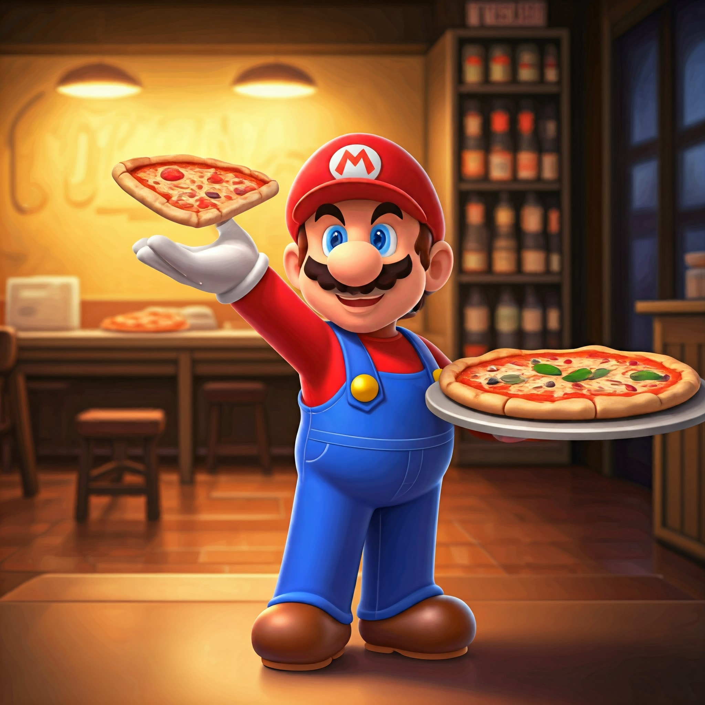
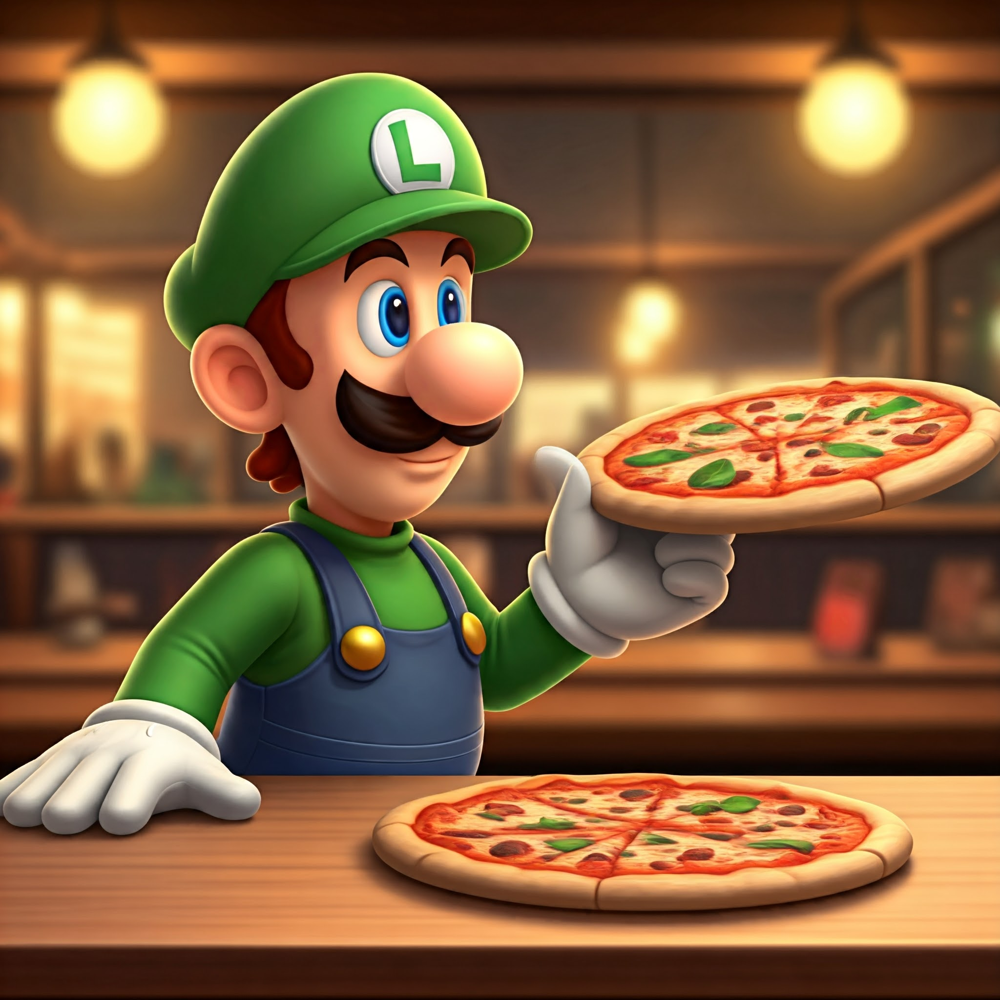

At Mario & Luigi’s, we’re not just passionate about pizza; we’re committed to sharing the flavors and warmth of our Italian heritage with everyone who walks through our doors. Our story begins in the heart of the Mushroom Kingdom, where the love for food brought us together. After countless adventures, we decided to bring that spirit of joy and togetherness into our very own pizzeria.
Our Philosophy Our pizzeria is built on the belief that every meal should be a celebration. We use only the freshest ingredients, sourced from local suppliers, to create authentic Italian dishes that remind you of home. Whether it’s our signature pizzas, hearty pastas, or delightful desserts, each dish is crafted with care and a sprinkle of magic.
